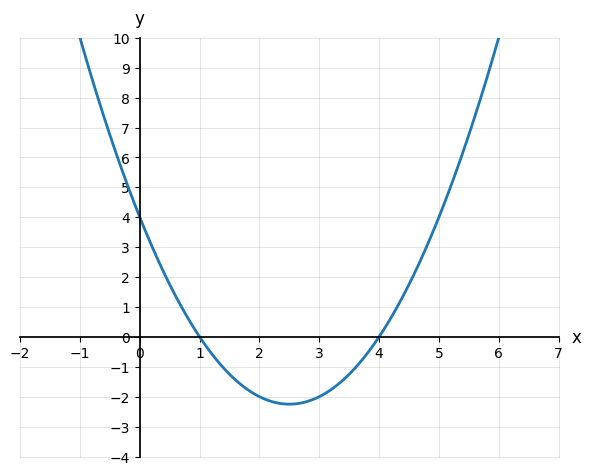

6.3 Solving Quadratic Equations by Factoring
- Solve quadratic equations by factoring
- Connect solutions (roots) to x-intercepts
- Describe when a quadratic has two, one, or no real solutions
Warm-Up
1. Factor completely: x2 − 9
2. A graph crosses the x-axis at x = −3 and x = 3. What is the value of the function there?
3. Multiply (x − 3)(x + 3), then graph it. What do you notice?

6.3.1The x-Intercepts of a Quadratic
The vertex is the x-axis and the parabola opens , so it must cross .
From the graph, roughly x ≈ and x ≈
Why don't we trust graphing for exact answers?
6.3.2Solving by Factoring
| Factor | |
| Set each factor to 0 | |
| Solve each |
| Move everything to one side | |
| Factor | |
| Solutions |
GCF = . Dividing both sides by it the solutions.
Solutions:
How many solutions did you get?
6.3.3How Many Solutions?
Solutions:
The graph crosses the x-axis times.
Factors as
Both factors give the solution, so there is only .
The graph the x-axis.
Are there two numbers that multiply to 7 and add to 4?
So there are real solutions.
The graph the x-axis.
| What the factoring looks like | How many solutions |
|---|---|
| Two different linear factors | |
| A repeated factor | |
| No real factors |
Practice
Conceptual Questions
1. How can you tell that an equation is quadratic?
2. Why do we set a quadratic equal to zero before factoring?
3. What does it mean if a quadratic has only one real solution?
4. If a parabola never touches the x-axis, what does that say about its solutions?
5. Why does (x − 4)2 = 0 have only one solution even though it is a product?
Solve by Factoring
6. x2 − 9 = 0
7. x2 + 8x + 15 = 0
8. x2 − 4x + 4 = 0
9. 4y2 + 12y = 0
10. x2 = 6x − 11
11. m2 − 7m + 10 = 0
12. 5p2 + 20p = 0
13. x2 + 3x − 18 = 0
14. 3x2 − 2x − 8 = 0
15. x2 + 12 = 6x
16. 3x2 + 10x + 8 = 0
17. 2x2 = 14x
18. x2 − 2x − 35 = 0
19. 4x2 + 4x = 8
20. x2 − 10x + 21 = 0
21. 6r2 = 15r
22. 7t2 − 28t + 28 = 0
23. x2 = 5x − 6
24. x2 − 9x = 0
25. 2x2 − 9x − 5 = 0
26. x2 + 4x + 7 = 0
27. 3x2 = 9x + 6x2
28. 8x2 + 60x + 72 = 0
29. x2 + 2x = 8
30. x(x − 4) = 0
31. x2 − 6x + 9 = 0
32. x2 + 1 = 0
Challenge

Roots:
Factors:
Equation: